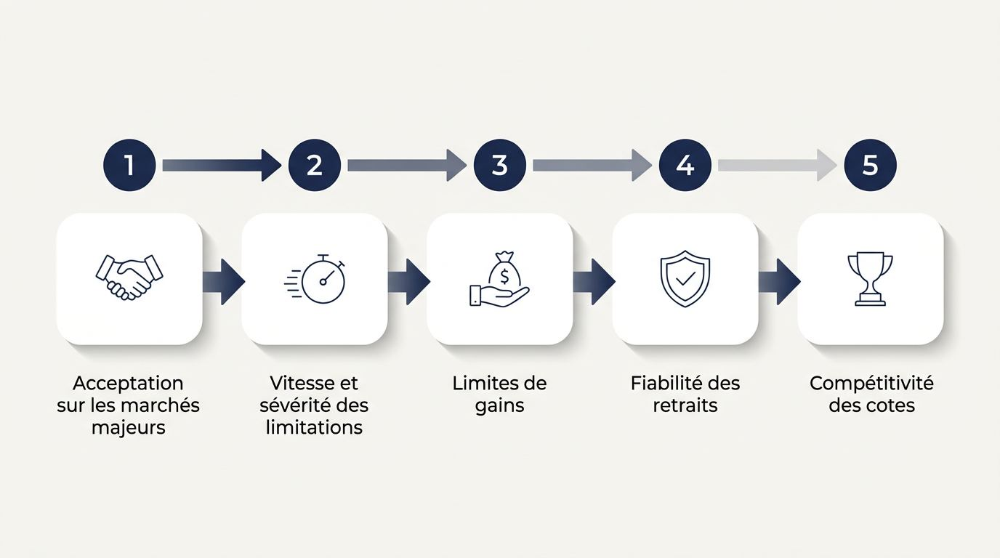
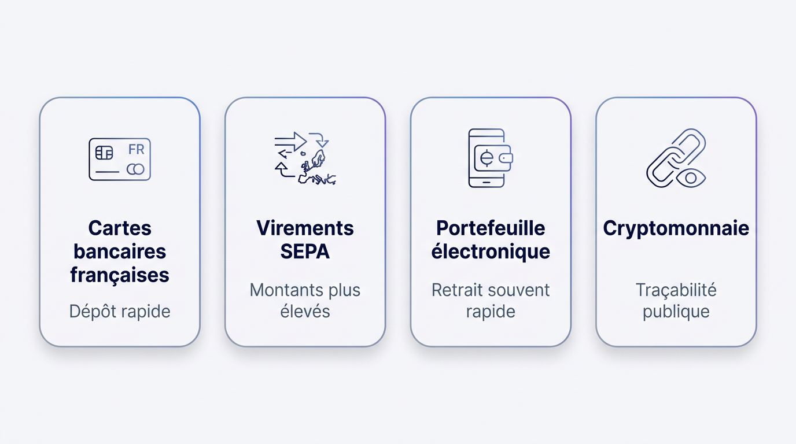
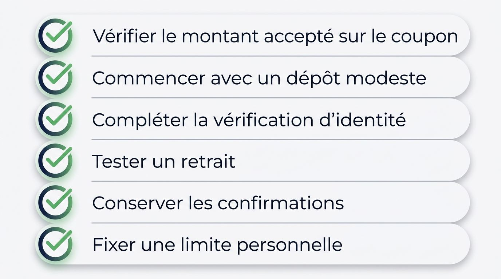
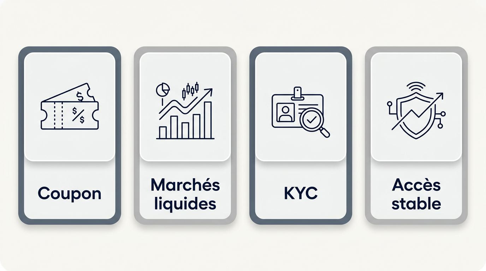

Bookmaker sans limite de mise et plafonds appliqués au coupon
Une mise maximale publiée ne correspond pas automatiquement au montant accepté pour votre pari précis, à cette cote, sur ce marché et pour votre compte. La limite de mise désigne le montant qu’un site autorise à engager. La limite de gains désigne le retour potentiel maximal autorisé sur un pari.
Un opérateur peut annoncer une forte capacité de mises, puis réduire le montant lorsque vous validez des paris simples à des cotes décimales particulières. Par exemple, un coupon préparé avec une mise élevée sur une cote donnée peut afficher un montant inférieur au moment de la confirmation. Les limites de mise des bookmakers dépendent alors de règles publiques, de la ligne disponible et de paramètres moins visibles liés au marché ou au compte.
Le plafond de gains influe aussi sur la mise maximale du bookmaker. Une cote élevée augmente le retour potentiel et peut donc réduire plus vite le montant accepté qu’une cote plus basse.
Maximum affiché et coupon accepté : le maximum publié décrit une règle générale. Seul le montant validé sur votre coupon indique la mise que le site accepte pour ce pari, à cet instant et pour votre compte.
Les quatre formes de limites de mise
Quatre modèles de plafonnement peuvent produire des mises acceptées très différentes, y compris chez un bookmaker qui met en avant une capacité de pari élevée. Un bookmaker sans plafond de mise clairement indiqué peut tout de même appliquer plusieurs règles successives avant d’accepter un pari à forte mise.
Les plafonds explicites figurent dans les conditions ou sur une ligne de marché. Viennent ensuite les plafonds par événement, souvent liés au volume disponible sur la compétition. Les limites fondées sur le gain potentiel s’appliquent ensuite au retour envisagé. Enfin, certaines restrictions n’apparaissent qu’à la validation du coupon.
| Type de limite | Fonctionnement | Effet sur une mise élevée envisagée |
|---|---|---|
| Plafond de mise publié | Le site annonce un plafond de mise par pari, parfois selon le sport ou le type de pari. | Vous connaissez une limite générale, qui peut rester inférieure à votre montant visé. |
| Plafond lié à l’événement | Le montant varie selon la compétition, le marché et le volume de paris disponible. | Les rencontres très suivies acceptent souvent des mises plus élevées que les marchés peu échangés. |
| Plafond fondé sur le gain | Le site fixe un plafond de gains par pari et parfois par jour. | Une même mise envisagée peut être admise à une cote basse et réduite à une cote plus élevée. |
| Restriction appliquée au coupon | Le système ajuste la somme au moment de placer le pari selon le marché et le compte. | Le montant réellement jouable ne se révèle qu’au moment de la validation. |
Prenons un même montant prévu sur deux paris. Sur une première ligne avec une cote modérée, le retour potentiel peut rester sous la limite de gains. Sur une seconde ligne à cote plus haute, ce même montant peut dépasser le plafond et le coupon réduit alors la mise autorisée. Ce mécanisme concerne aussi les paris combinés et les paris système, dont le retour potentiel dépend de plusieurs sélections.
Les signes d’une limitation de compte ou de marché
Les restrictions apparaissent souvent dans le comportement du coupon bien avant qu’un message ne mentionne une limitation de compte. Une réduction des mises autorisées peut venir d’une règle liée à votre compte ou d’une liquidité limitée sur le marché choisi.
Une activité durablement gagnante peut coïncider avec une limitation de compte de parieur gagnant, sans permettre d’établir la raison précise appliquée par l’opérateur. De même, un bookmaker présenté comme sans restriction de compte peut accepter une mise sur un grand match et en réduire une autre sur un marché spécialisé.
Les signaux observables incluent les éléments suivants.
- Une mise saisie est automatiquement abaissée lorsque vous validez votre pari.
- Certaines cotes sont refusées ou proposées avec une limite inférieure, alors que d’autres lignes du même événement restent ouvertes.
- Les paris sur marchés de niche à faible liquidité reçoivent des plafonds plus faibles que les marchés principaux.
- Les limites diffèrent entre sports, compétitions ou marchés, y compris pour un même montant.
- Votre compte accepte moins qu’un autre coupon comparable après plusieurs paris, ce qui peut signaler une restriction propre au compte.
- Un marché peu échangé peut limiter tout parieur, même sans réduction individuelle de votre capacité de mise.
Comment comparer les bookmakers pour les grosses mises
L’acceptation de la mise constitue le premier critère, car les meilleures cotes de paris sportifs ou un bonus perdent leur intérêt si le montant voulu ne passe pas. Un comparatif de bookmakers pour gros joueurs doit donc classer les sites de paris selon leur capacité à accepter le pari envisagé, puis selon les cotes, les outils, les retraits et la fiabilité opérationnelle.

Cette approche sert les lecteurs qui recherchent un bookmaker pour parieurs à gros enjeux ou un bookmaker haute mise parmi les bookmakers hors ARJEL. Elle distingue les conditions publiées par les opérateurs des résultats variables selon le marché, la cote, l’historique du compte, la liquidité et le profilage par type de joueur français.
La méthode d’évaluation des paris à forte mise
La note évalue la possibilité concrète de placer puis de réaliser un pari important. Elle privilégie donc la tolérance observée sur les marchés majeurs, y compris lorsqu’un compte affiche une activité gagnante, avant les éléments de confort ou les bonus.
Les politiques publiées permettent de vérifier les plafonds de gains, les règles de paiement et la disponibilité du service client. L’acceptation effective, la rapidité d’une limitation et sa sévérité restent variables selon le compte et la ligne visée. Les indicateurs de réputation communautaire apportent un contexte complémentaire, sans démontrer à eux seuls qu’un bookmaker pour gros parieurs ne limite pas les gagnants.
La pondération dédiée aux gros enjeux suit cet ordre.
- Acceptation sur les marchés majeurs : la priorité revient au montant que le site accepte sur des compétitions et des marchés suffisamment liquides.
- Vitesse et sévérité des limitations : l’évaluation tient compte des restrictions susceptibles de réduire rapidement la capacité de parier.
- Limites de gains : un plafond faible peut réduire l’intérêt d’une cote élevée, même si la mise initiale semble admise.
- Fiabilité des retraits : les conditions opérationnelles doivent permettre d’accéder aux fonds issus d’un pari gagné.
- Compétitivité des cotes : la comparaison mesure le prix offert sur les marchés où vous souhaitez engager une mise importante.
- Stabilité mobile : l’interface doit conserver une validation fiable lorsque les cotes et les limites changent rapidement.
Cotes, marchés et profondeur des paris en direct
Des cotes compétitives et un marché profond comptent double pour une grosse mise, car elles déterminent à la fois la valeur du pari et le montant qu’un site peut accepter. La Ligue 1, le Top 14 et l’UEFA Champions League concentrent généralement davantage d’échanges que des compétitions ou marchés très spécialisés, ce qui favorise une capacité de mise plus régulière.
Les paris sportifs en direct demandent une vigilance supplémentaire. Une cote peut bouger, une ligne peut disparaître et le montant accepté peut diminuer entre la sélection et la validation. L’offre de paris sur compétitions sportives françaises versus internationales mérite donc une comparaison marché par marché. La diffusion en direct ou le streaming de matchs peut aider au suivi, sans garantir la disponibilité d’un marché ni l’acceptation d’une forte mise.
Avant de parier, vérifiez notamment les points suivants.
- La profondeur de la ligne sur le résultat principal, les handicaps et les totaux du match visé.
- Les cotes proposées sur la Ligue 1, le Top 14 et l’UEFA Champions League à montant comparable.
- Le montant accepté sur les marchés principaux, puis sur les options plus spécialisées du même événement.
- La vitesse de mise à jour pendant un pari en direct et la fréquence des suspensions de marché.
- La disponibilité de la diffusion en direct pour le match suivi et ses éventuelles restrictions d’accès.
Fonctions de pari et fiabilité sur mobile
Une fonctionnalité mobile devient décisive lorsqu’une grosse mise doit être validée, ajustée ou suivie pendant un marché sensible au temps. Une application mobile de paris sportifs doit afficher le coupon, les variations de cote et les limites proposées sans délai excessif, y compris depuis un navigateur mobile.
Le Cash Out, ou retrait anticipé de pari, et le Cash Out partiel peuvent réduire l’exposition sur certains paris. Leur présence ne garantit ni leur disponibilité sur votre coupon ni un montant proposé stable pendant le direct. Les notes d’application constituent un indice d’usage, mais elles ne prouvent ni la fiabilité du compte ni la qualité du traitement des retraits.
Contrôlez ces fonctions avant d’utiliser un site pour une mise élevée.
- La disponibilité du Cash Out et du Cash Out partiel sur les marchés où vous comptez parier.
- La latence du coupon pendant les paris en direct, sur application et dans le navigateur.
- La continuité de la diffusion en direct, si vous utilisez le streaming pour suivre votre pari.
- La capacité de l’application à conserver votre session et l’état du coupon lors d’un changement de réseau.
- Les outils de sécurisation des comptes, notamment l’authentification à deux facteurs, pour protéger l’accès à un solde important.
L’impact des bonus sur les grosses mises
Les outils facilitent l’exécution du pari, mais un bonus de bienvenue peut perdre son intérêt dès qu’une mise importante dépasse le montant qualifiant ou vise un marché exclu. Un bonus de bienvenue de bookmaker doit donc rester secondaire face au montant accepté et aux conditions de retrait.
Contrôlez les clauses qui réduisent la valeur d’un bonus à miser.
- La cote minimale exigée, car une cote boostée ou une cote basse peut ne pas être admissible.
- La mise qualifiante maximale, qui peut être bien inférieure au montant que vous souhaitez engager.
- Les exigences de mise, car elles imposent parfois de rejouer le bonus avant tout retrait.
- Les marchés exclus, notamment certains paris en direct, paris combinés ou marchés spécialisés.
- Le plafond des gains issus du bonus, qui peut limiter le retour obtenu malgré une mise élevée.
- Le code promo et les conditions de retrait associées, qui peuvent modifier la disponibilité des fonds.
Paiements adaptés aux grosses mises depuis la France
Après les conditions de bonus, la circulation des fonds détermine si une forte capacité de mise reste utilisable depuis la France. Les moyens de paiement d’un bookmaker influent sur le dépôt, les frais, les contrôles de sécurité, la vérification et le délai d’accès aux retraits.

Les opérateurs internationaux appliquent leurs propres contrôles d’identité, de paiement et de traitement des litiges. Les flux liés aux jeux d’argent vers des sites non autorisés peuvent aussi attirer l’attention des banques françaises ou des services fiscaux, ce qui rend la traçabilité des mouvements utile.
Les moyens de paiement disponibles en France
Confirmez le moyen de paiement auprès du site avant de compter sur lui pour alimenter ou retirer un solde conséquent depuis la France. La configuration peut évoluer selon les sites, les contrôles internes et le pays de la carte ou du compte bancaire.
| Catégorie de paiement | Disponibilité depuis la France | Capacité de financement | Frais possibles | Délai de traitement | Traçabilité |
|---|---|---|---|---|---|
| Cartes bancaires françaises | Souvent proposée, à confirmer | Variable selon la carte et le site | Selon l’émetteur ou l’opérateur | Généralement rapide au dépôt | Élevée |
| Virements SEPA | Fréquemment disponibles | Adaptée à des montants plus élevés | Parfois facturés par l’établissement bancaire | Plus long qu’un dépôt par carte | Élevée |
| Portefeuille électronique | Dépend du portefeuille et du site | Variable selon les plafonds du portefeuille | Possibles à l’alimentation ou au retrait | Souvent rapide après validation | Élevée |
| Moyen prépayé | Disponibilité irrégulière | Capacité souvent limitée | Frais d’achat ou de conversion possibles | Rapide au dépôt | Moyenne |
| Cryptomonnaie | Dépend de la configuration actuelle | Variable selon l’actif et les contrôles | Frais de réseau et conversion possibles | Variable selon le réseau | Traçabilité publique, mais traitement propre au site |
Le dépôt minimum d’un bookmaker, lorsqu’il est publié, donne seulement le seuil d’entrée. Il ne renseigne pas sur la capacité de traitement d’un dépôt élevé ni sur les règles applicables au retrait. Un paiement en cryptomonnaie chez un bookmaker peut offrir une solution alternative utilisée depuis la France, sans supprimer les frais, les contrôles ou les conditions propres à l’opérateur.
Retraits, KYC et gestion du solde
Une grosse mise exige des conditions de retrait, une vérification d’identité et une exposition du solde adaptées à votre activité prévue. Le KYC, ou vérification d’identité, peut être demandé avant le traitement des retraits afin de répondre aux obligations internes et à la lutte contre le blanchiment d’argent.
Examinez les conditions de retrait du bookmaker avant un dépôt substantiel, puis finalisez le KYC avant d’augmenter vos mises. Certains opérateurs demandent que le retrait revienne vers le moyen de paiement utilisé au dépôt, selon leurs règles en vigueur. Un solde important concentré chez un seul site reste exposé à un délai de traitement, une demande documentaire ou une difficulté d’accès au compte.
Avant de déposer, vérifiez les éléments suivants.
- Le retrait minimum du bookmaker et le plafond applicable par demande, par période ou par moyen de paiement.
- Le délai de traitement des retraits annoncé après validation par le service client.
- L’obligation éventuelle de retirer vers la carte, le compte ou le portefeuille électronique ayant servi au dépôt.
- Les documents demandés pour la vérification d’identité et leur procédure de transmission.
- Les frais éventuels liés au retrait, à la conversion ou au virement.
- Les conditions de retrait actuellement affichées et les confirmations de transactions, coupons de paris et retraits à conserver en cas de contestation.
Accès et statut des licences pour les bookmakers internationaux
La stabilité d’accès et les informations de licence déterminent si vous pourrez consulter votre compte et finaliser un retrait en cours depuis la France. Les paris sportifs y relèvent de la régulation des jeux d’argent en France sous l’autorité de l’Autorité nationale des jeux, l’ANJ, tandis que des opérateurs internationaux peuvent afficher une licence de jeu étrangère.
Cette licence constitue une information comparative sur l’opérateur. Les procédures de plainte, les contrôles de vérification, la gestion des fonds et les recours en cas de litige peuvent différer du cadre applicable aux bookmakers agréés par l’ANJ. Un bookmaker agréé en France et un bookmaker français avec grosses mises ne répondent pas aux mêmes critères de comparaison qu’un site hors ANJ.
L’ANJ dispose d’un pouvoir de blocage administratif et de déréférencement des sites de jeux d’argent non autorisés. Ses actions peuvent concerner les fournisseurs d’accès et les moteurs de recherche. Consultez donc les informations actualisées de la liste noire ANJ des sites bloqués avant tout dépôt.
Vérifiez ces éléments avant d’ouvrir ou d’alimenter un compte.
- Les coordonnées de la licence de paris sportifs affichée par l’opérateur et l’autorité qui l’a délivrée.
- La présence du domaine dans les informations de blocage ou de déréférencement publiées par l’ANJ.
- La procédure de plainte, les coordonnées du service client et les règles de traitement des litiges.
- La cohérence entre le domaine utilisé, les mentions légales et les informations de compte.
- Les modalités prévues par l’opérateur en cas de changement de domaine ou de problème d’accès.
Accès interrompu et retrait en cours : un changement de domaine ou un blocage peut empêcher l’accès habituel au compte. Vous devrez alors vérifier les canaux officiels de l’opérateur et conserver vos références de retrait, sans supposer qu’un nouveau domaine offre les mêmes conditions d’accès.
Les vérifications à faire avant un pari important
Une limite annoncée doit être confrontée au marché visé, à la cote, à l’état du compte et à la voie de paiement avant d’engager des fonds importants. Cette vérification permet d’évaluer si un site de paris sportifs sans limite de mise peut accepter vos paris sportifs sans limite de mise dans les conditions que vous avez réellement prévues.

Commencez par les informations de licence et d’accès, vérifiez ensuite le coupon et préparez enfin le retrait. Les sites non autorisés ne proposent pas nécessairement des outils standardisés de protection des joueurs, comme une limite de dépôt, une limite de perte ou l’auto-exclusion comparable au cadre français. Fixez donc vos propres limites avant de parier.
Vérifier la fiabilité et la sécurité du compte
Les signaux de confiance liés à un bookmaker sans limite doivent reposer sur des informations publiées et vérifiables.
Contrôlez les informations disponibles avant de transmettre des documents ou des fonds.
- La licence affichée, son numéro éventuel et les coordonnées de l’autorité mentionnée.
- La politique KYC, notamment les documents demandés et les motifs pouvant déclencher une vérification.
- Les informations de gestion des fonds et les règles de paiement publiées dans les conditions générales.
- La procédure de recours, y compris les éventuelles procédures de médiation privées pour les litiges de paiement.
- Les moyens de joindre le service client et les délais de réponse annoncés.
- L’authentification à deux facteurs, la gestion des appareils connectés et les alertes de connexion.
- Les avis indépendants, utiles comme contexte, sans les considérer comme une garantie de retrait ou d’accès.
Tester progressivement l’acceptation et les retraits
Une validation modeste permet de vérifier si les conditions annoncées fonctionnent avant de faire dépendre une forte mise d’un nouveau site de paris sans limite de mise. Parier comporte des risques, et cette démarche doit rester compatible avec vos moyens et vos limites personnelles.
Suivez une séquence simple avant d’augmenter votre activité.
- Vérifiez le montant accepté sur le marché et à la cote que vous ciblez, directement sur le coupon.
- Commencez avec un dépôt modeste afin de contrôler le parcours de paiement.
- Complétez la vérification d’identité avant de multiplier les paris, car elle peut être demandée avant un retrait.
- Testez un retrait lorsqu’il est disponible et confirmez les conditions alors en vigueur.
- Conservez les confirmations de dépôts, de paris et de retraits.
- Fixez une limite personnelle de temps et de dépense en dehors de l’opérateur, et utilisez les dispositifs de jeu responsable, d’auto-exclusion ou d’interdiction volontaire de jeux lorsque votre situation l’exige.
Les points essentiels avant de choisir un bookmaker
Pour rechercher une capacité de mise plus élevée depuis la France, retenez le montant accepté, la liquidité du marché, la préparation du retrait et la continuité d’accès au site.

- Le coupon indique la mise réellement admise, au-delà des limites de mise publiées.
- Les marchés les plus liquides soutiennent plus régulièrement une mise importante.
- Le KYC et les conditions de retrait doivent être validés avant de conserver un solde élevé.
- Un accès stable au site conditionne la gestion du compte et d’un retrait en cours.
- Les contrôles de sécurité du compte réduisent le risque de perte d’accès à vos fonds.
Choisissez selon la mise réellement acceptée
Le choix pertinent repose sur le montant que le coupon accepte, sur des retraits praticables et sur un accès stable, plutôt que sur une promesse de mise illimitée. Comparez les bookmakers internationaux à partir de ces preuves concrètes avant d’y engager vos paris sportifs. Gardez une limite de dépense adaptée à votre situation.
Questions fréquentes sur le bookmaker sans limite de mise
Ces réponses traitent des derniers cas pratiques utiles à votre choix de site de paris.
Une bourse de paris peut-elle accepter une grosse mise refusée par un bookmaker ?
Oui, si une contrepartie et une liquidité suffisantes existent au prix demandé. Sur une bourse, l’exécution dépend de l’appariement disponible et des cotes, y compris avec des outils de trading de cote ou un betting exchange externe.
Les banques françaises peuvent-elles demander des informations sur des virements liés à un bookmaker international ?
Oui, les banques françaises peuvent demander des justificatifs sur des flux financiers vers des opérateurs internationaux. Conservez les relevés, confirmations de dépôt, retraits et paris afin d’assurer la traçabilité bancaire des mouvements en cash.
Le Cash Out peut-il réduire l’exposition après un pari en direct à forte mise ?
Oui, le Cash Out peut réduire l’exposition en clôturant tout ou partie d’un pari. Le retrait anticipé de pari dépend toutefois du marché et du moment, et son montant peut varier pendant les paris sportifs en direct.
Une grosse mise acceptée garantit-elle les mêmes limites pour les prochains paris ?
Non, une mise acceptée ne garantit pas les mêmes limites de mise pour les prochains paris. Elles peuvent varier selon le sport, la compétition, la cote, la liquidité et le même compte.